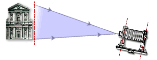
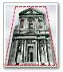

When not adjusted using built in swings and tilts, a view camera works just like a 35 mm camera - the film plane tilts when the whole camera is tilted to include all of the building in the frame.
|  When not adjusted using built in swings and tilts, a view camera works just like a 35 mm camera - the film plane tilts when the whole camera is tilted to include all of the building in the frame. |
|
|  | |